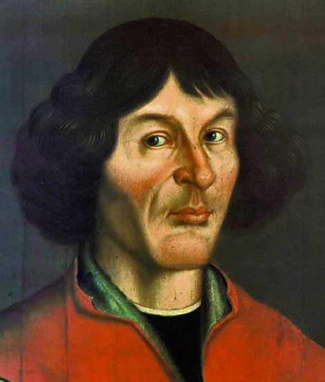

Some of the best

“Two things inspire me to awe - the starry heavens above and the moral universe within.”

“There's a little place, a place called space. It's a pretty little place, it's across the tracks.”
“The cosmos is within us. We are made of star-stuff. We are a way for the universe to know itself.”